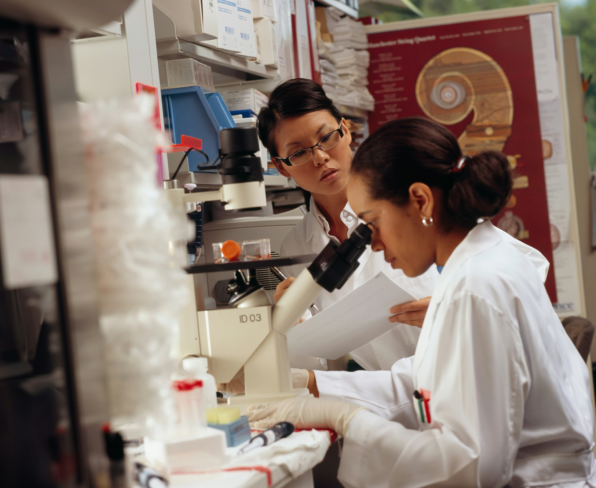

Though this number is gradually increasing, it will take decades for women to become equal in numbers to men. And that's not the only place women aren't equal in. For example, female chemists only make 70 cents for every dollar a man makes. Global organizations like Graduate Women in Science are focused on helping women who are persuing careers in science.
Mutliple studies have shown that lots of girls are interested in STEM at a young age, but as they grow up, they give up on the field. Our goal is to provide girls with the support they need to continue on with their dreams. Through our community and virtual opportunities we hope to acheive this goal.
Chien-Shiung Wu is often called the First Lady of Physics, due to her work on the Manhattan Project and her discovery of how to fuel an atomic bomb. She's also known for her work on red blood cells and how they cause sickle-cell anemia. Her story is very inspiring, as she came from a humble fishing villiage in China. Her story proves that it's not where you came from, but what you can do.
Though she didn't live long, Alice Agusta Ball was able to make a huge impact on the world. She was the first Black woman to graduate with a masters degree from the University of Hawaii.Her discoveries changed treatment for leprosy, and saved many lives. Like many women in STEM, she was not credited for her work, and only now is recognized for her achievements.
Marie Curie is one of the most well known women in science, because of her discovery of radiation. She was also the first woman to win a Nobel Prize. But she didn't stop there, she won a second Nobel Prize- this one in chemistry- making her the first person to win a Nobel Prize in two different fields. Her achievements are an inspiration to many women, as they show that you can do anything you put your mind to. Nothing is impossible.